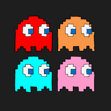
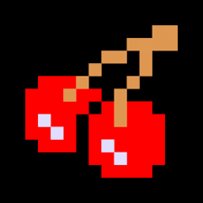
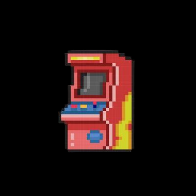

Pac-Man
15 Billion sales!

Pac-man eet 4 spookjes met behulp van kersen die in de levels te verkrijgen zijn. Ze heten Inky (blauw), Blinky (rood), Pinky (roze), en Clyde (oranje)!
De Pac-man levels vinden plaats in een grote zwarte ruimte met blauwe muren en witte bolletjes om op te eten. Hij spawnt meestal links boven in.


Pac-man eet meestal rode kersjes om de spoken op te kunnen eten. Ook houdt hij van aarbeien en sinaasappels en andere stukken fruit! Zijn vorm is gebaseerd op die van een pizza.
Pac-man is bedacht (en op een manier geboren) op 22 Mei 1980. Hij kwam eerst uit in arcadehallen en werdt daarna razend populair in de popcultuur.
